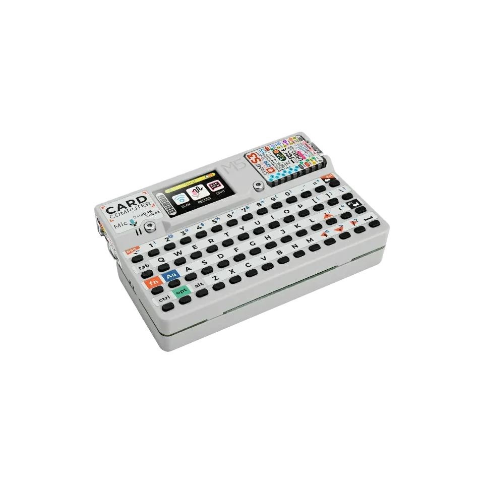

portable bench
M5Stack Cardputer for portable ESP32 debugging
Use the M5Stack Cardputer as a self-contained ESP32-S3 hardware debugging tool with screen, keyboard, speaker, microphone, IR transmitter, SD card and battery. It fits portable UART console work, quick field checks and browser-assisted ESP32-S3 debugging when a built-in screen, keyboard and battery are useful.

Board-specific guide for M5Stack Cardputer firmware, portable UART console use, wiring notes and ESP32-S3 hardware debugging workflows.
compatibility
M5Stack Cardputer board overview
Use this page to judge the M5Stack Cardputer for portable serial, I2C, GPIO and IR-oriented ESP32 Bit Pirate work.
practical tasks
M5Stack Cardputer supported workflows
Cardputer is strongest as a portable UART, I2C, GPIO and IR tool when Grove wiring and the built-in keyboard are enough.
Use the browser terminal after flashing, or use Cardputer as a portable serial console for external boards.
Use Grove access for sensors, EEPROMs and quick bus probes when the mapping is planned.
Useful for pin testing, pulses, measurements and compact fixtures on exposed GPIO.
Built-in IR TX and SD card support make remote-control and file-based recipes more natural.
M5Stack Cardputer pin mapping and wiring notes
Use the Cardputer Grove pins exposed by the firmware mapping for target wiring; the wiki lists Grove as GPIO1/GPIO2 and SD Card SPI as GPIO40/GPIO39/GPIO14/GPIO12. Keep targets at safe 3.3 V logic unless you add external level shifting. Keyboard, display, SD and audio hardware use board resources, so verify the mapped pins before connecting a target.
Always verify voltage and pin mapping before connecting a target. The ESP32-S3 side is not 5 V tolerant unless external level shifting or the Dock path is used correctly.
useful pages
M5Stack Cardputer useful next pages
Jump from Cardputer to the serial, I2C, GPIO, IR and browser pages that fit its portable layout.
Protocol modes
Useful recipes
Use the task guide for wiring, commands and troubleshooting.
First serial connection firmwareUse the task guide for wiring, commands and troubleshooting.
Capture infrared remoteUse the task guide for wiring, commands and troubleshooting.
Choose GPIO pinout before wiringUse the task guide for wiring, commands and troubleshooting.
Tools and hardware
Open Web Serial for M5Stack Cardputer CLI sessions after flashing.
Web FlasherFlash the matching M5Stack Cardputer build from a compatible browser.
Hardware ecosystemCheck docks, adapters and wiring hardware that pair with M5Stack Cardputer.
Modules and target chipsBrowse chips and breakout modules that make sense with M5Stack Cardputer wiring.
board-specific answers
Cardputer FAQ
Quick Cardputer answers about support, Grove wiring, portable serial use and flashing ESP32 Bit Pirate.
Is the M5Stack Cardputer fully supported by ESP32 Bit Pirate?
Yes. This site includes a dedicated Cardputer firmware manifest and a board-specific page for portable ESP32 Bit Pirate workflows.
Can Cardputer handle I2C and GPIO modules?
Yes. Use the available Grove pins and supported mappings for UART, I2C and GPIO tasks. Choose ESP32-S3 DevKit or Dock when a workflow needs many simultaneous lines or easier bench access.
Can I use the Cardputer as a serial console?
Yes. UART and Web Serial workflows are one of the strongest reasons to use ESP32 Bit Pirate on Cardputer.
Can the Cardputer use its keyboard and screen as a portable tool?
Yes. The built-in keyboard, screen, SD card and battery make Cardputer practical for standalone field checks, while external targets still need correct wiring, shared ground and safe logic levels.
How do I flash ESP32 Bit Pirate on Cardputer?
Open the Web Flasher, select the Cardputer build, then follow the bootloader instructions shown by the flashing page.

source project
M5Stack Cardputer in the ESP32 Bit Pirate ecosystem
ESP32 Bit Pirate on M5Stack Cardputer turns the keyboard, screen, SD card and Grove access into a portable serial, I2C and GPIO bench.